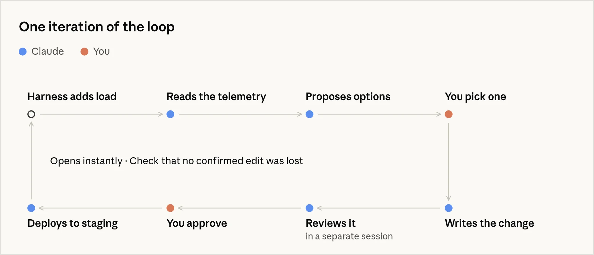
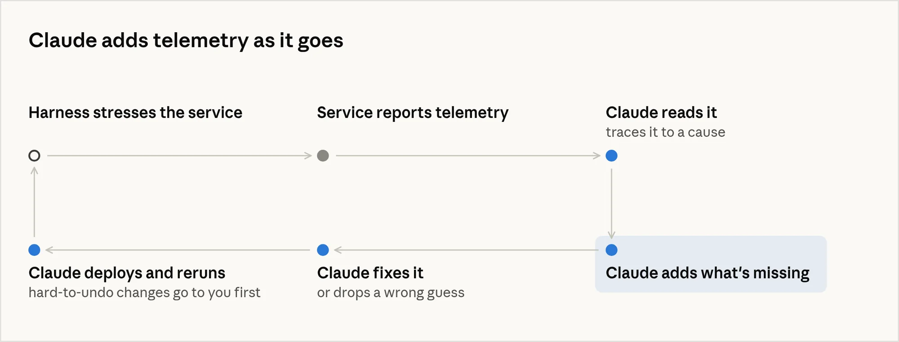
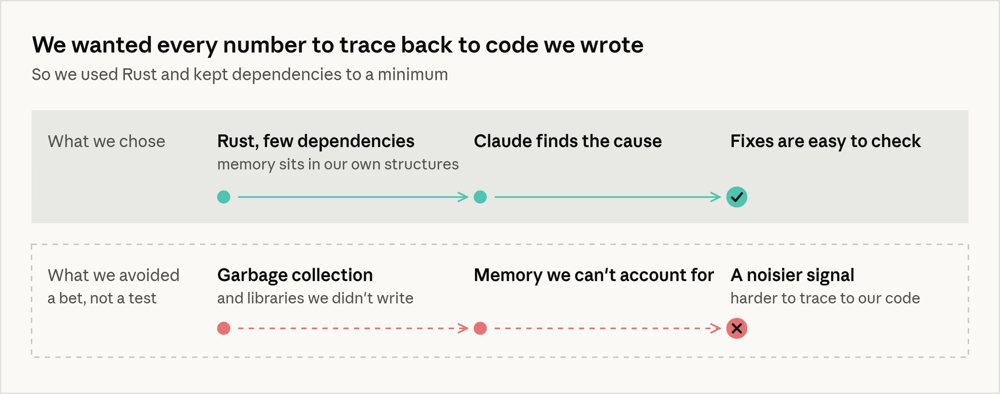

claude.dev · Engineering（作者 Vivek Nair） · 2026-11-17
Using a “chaos loop” to harden the Claude Docs launch: 60 server errors across billions of requests用「混沌循环」把 Claude Docs 的发布扛住：20 亿次请求里的 60 次服务器错误
60 秒速览：这篇文章在说什么
译者所加，不是原文的一部分 —— 读完这 4 条，再看原文会快很多。
- 一句话结论：发布前的「抗压能力」可以变成一场自己跑的实验——把服务弄坏、读遥测、提修复，循环两周。结果是 20 亿次请求只有 60 次服务器错误，9 月推生产 629 次、零回滚。
- 循环长什么样：挑场景 → 跑测试载体 → 读遥测 → 给选项 → 人拍板 → 部署到预发 → 重跑。最忙一周同时约 11 个子智能体，峰值 30 个；难以撤销的决定（schema、键布局、存储方式）留给人。
- 两个前提：一是让服务「可读」——Claude 边跑边补遥测，任何异常都能追到某个具体代码或设计决定；二是技术选型选「量得到就能追回」的，于是有了 Rust、无垃圾回收、依赖压到最少。
- 代价：8 月底到发布日约 12.5 万美元推理费；作者估计小团队版本两周冲刺只要 3,000–10,000 美元，步骤在文末。
常见做法
- 用几百个内部用户压一压，凭感觉决定放量速度
- 出了故障再补日志，事后回溯
- 挑语言看人写起来顺不顺，依赖能用就行
- 难以撤销的改动也交给智能体自己决定
本文的做法
- 在镜像生产的预发集群上造百万级合成文档，故意弄坏
- 边跑边补遥测，异常必须能追到具体代码
- 挑「Claude 最容易测量」的栈：Rust、少依赖、无 GC
- schema 与存储这类决定，停下来给人几个选项
对照表由译者按原文整理，原文没有这张表。
读法建议：想抄做法，直接看第一节的循环图与最后一节的五步；想理解「为什么这次行」，看「为什么现在才行」里关于目标漂移的那段。
发布前三周，Claude Docs 还只是单节点上的概念验证。作者把「扛不扛得住」这件事变成一场可以自己跑的实验：在预发集群上让 Claude 连续两周故意弄坏服务、读遥测、提修复，人只在难以撤销的决定上点头。
Claude Docs is a doc editor that you, your teammates, and Claude all work in together. The interesting part is that a Claude session anywhere, from chat to Claude Code, can open the same doc and read, write, and comment in it live, right next to you. We released Docs on September 16, 2026. This post is about the service that runs underneath it.
Claude Docs 是一个文档编辑器，你、你的同事和 Claude 都在里面一起工作。有意思的地方在于：任何一个 Claude 会话——从聊天到 Claude Code——都能打开同一份文档，就在你旁边实时读取、写入、评论。我们在 2026 年 9 月 16 日发布了 Docs。这篇讲的是它底下跑的那套服务。
Three weeks before Claude Docs opened to the public, it was running as a proof of concept on a single node, used by a few thousand people inside Anthropic. We were racing toward an ambitious launch date, and our own estimate said we'd see millions of docs within the first few days. We launched on September 16. By September 22, people had created over 4.6 million docs. Across 2 billion requests we saw only 60 server errors, and we never had to roll back. The whole Docs service ran on about 50 memory-optimized pods. Two decisions got us there:
在 Claude Docs 对外开放的三周前，它还只是一个跑在单节点上的概念验证，用户是 Anthropic 内部几千人。当时我们正冲着一个野心不小的发布日赶工，而我们自己的估算说，头几天就会看到上百万份文档。我们在 9 月 16 日发布。到 9 月 22 日，人们已经创建了超过 460 万份文档。在 20 亿次请求里，我们只看到 60 次服务器错误，而且从未需要回滚。整个 Docs 服务跑在大约 50 个内存优化型 pod 上。把这件事做成的，是两个决定：
- A chaos loop at launch scale. We set up a test harness on our staging environment where Claude ran constantly for two weeks to try and break the service. It load tested every part of our infrastructure and fixed whatever fell over.
- Improving legibility to Claude. Claude could only close the loop effectively on fixes if our system produced accurate telemetry every iteration. We made a call early to avoid any runtime that uses memory or CPU in ways our code can't easily control (e.g. runtimes with garbage collection). When a telemetry signal looked concerning, Claude could easily trace it to a bug or a specific design decision.
- 一场发布规模的混沌循环。我们在预发环境上搭了一个测试载体，让 Claude 连续跑两周，专门去把服务弄坏。它对我们基础设施的每个部分做负载测试，并把倒下的东西修好。
- 让服务对 Claude 更可读。只有当我们的系统每一轮都产出准确的遥测，Claude 才能有效地把修复这件事闭合成环。我们很早就做了一个决定：避开那些内存或 CPU 使用方式我们控制不住的运行时（比如带垃圾回收的运行时）。当某个遥测信号看起来不对劲，Claude 就能轻松地把它追溯到某个 bug，或某个具体的设计决定上。
But honestly, this only worked because our frontier models have gotten much better recently (I used an internal research model roughly comparable to Claude Fable 5.2). In our experience, they can now stick with one goal through a run like this for weeks, which is what helped us hit launch scale in a tight timeline.
但说实话，这件事之所以成立，只是因为我们最新的前沿模型最近变强了很多（我用的是一个内部研究模型，大致相当于 Claude Fable 5.2）。按我们的经验，它们现在能在这样一次运行里连着几周咬住同一个目标，这正是我们能在这么紧的时间线里做到发布规模的原因。
The chaos loop混沌循环
循环本身很简单：挑场景 → 跑测试载体 → 读遥测 → 提选项 → 人拍板 → 部署到预发 → 重跑。难点不在循环，而在让它一次跑两周都不跑偏，并且把「难以撤销的决定」留给人。
A few thousand internal users on one machine told us nothing about whether the service would survive launch, and we obviously didn't have launch traffic to test with. We wanted real evidence to decide how fast we could roll out. So on September 4, about two weeks before launch, I had Claude drive a staging cluster that mirrored production at over a million synthetic docs a day and break core components on purpose. And then... I just left it running (I've included the full cost at the end of this article). My setup was pretty simple. The loop was a session in Claude Code that I left running: pick a scenario, run the harness, read the telemetry, propose a fix, ship it to staging, repeat. That session acted as a coordinator and handed most of the work to sub-agents. In the busiest week, that usually meant about 11 sub-agents running at a time, and 30 at the peak. The coordinator also talked to our internal variant of Claude Tag (beta) via the Slack MCP to learn from other infrastructure teams at Anthropic who had scaled similar services. Their agents checked our scaling approach for pitfalls they’d already hit.
一台机器上几千个内部用户，完全说明不了这服务能不能扛住发布，而我们显然也没有发布流量可以拿来测。我们想要真实的证据，来决定能多快地把量放上去。于是在 9 月 4 日，也就是发布前大约两周，我让 Claude 去驱动一个镜像了生产环境的预发集群，每天造一百万份以上的合成文档，并故意弄坏核心组件。然后……我就只是让它一直跑着（这篇文章末尾我列出了完整的花费）。我的搭法很简单。这个循环，就是我在 Claude Code 里一直开着的一个会话：挑一个场景、跑测试载体、读遥测、提修复方案、发到预发、重复。那个会话充当调度者，把大部分活派给子智能体。最忙的一周，通常同时有大约 11 个子智能体在跑，峰值到 30 个。调度者还通过 Slack MCP，跟我们的内部版 Claude Tag（beta）聊，去向 Anthropic 内部其他扩展过类似服务的团队取经。他们的智能体拿自己踩过的坑，来检查我们的扩展方案。
The fun part was picking scenarios I thought were paranoid:
有意思的部分，是挑那些我认为偏执的场景：
- 10M new docs created in a single day
- 22,000 live connections reconnecting at once
- One hot doc with hundreds of viewers, a server killed while it was still loading a doc, and the database stalling
- 单日新建 1000 万份文档
- 22,000 条实时连接同时重连
- 一份有几百人围观的热文档，加上一台服务器在还在加载文档时被杀掉，数据库再卡住
Each iteration looked the same. Our testing harness selected a feature like document creation and pushed creation to saturation. Claude then read telemetry using the Datadog MCP and came back with a short menu of options and a recommendation. If the recommendation was easy to undo, Claude wrote and deployed the change to staging and reran the test. We had telemetry on every operation the service ran. Every database query, for example, reported its name and how many rows it scanned versus how many it returned, so Claude could spot a bad query and rewrite it.
每一轮看起来都一样。我们的测试载体挑一个功能，比如文档创建，把创建打到饱和。然后 Claude 用 Datadog MCP 读遥测，回来给出一个短短的选项菜单和一条推荐。如果推荐的做法容易撤销，Claude 就写好改动、部署到预发，再重跑测试。服务跑的每一个操作，我们都有遥测。比如每一次数据库查询，都会报告它的名字、扫了多少行、返回了多少行，这样 Claude 就能发现坏的查询并把它重写。

循环的一轮：两个决定由人来做 一个八步的环，左上角的图例区分「Claude 做的」与「你做的」。上半圈向右：测试载体加负载 → Claude 读遥测 → Claude 给出选项 → 你挑一个；下半圈向左：Claude 写改动 → 另开一个会话审查 → 你批准 → Claude 部署到预发，再回到测试载体。环中央写着两条不变量：打开要快、确认过的编辑不能丢。
原文图注：FIG 1 One iteration of the loop, with two decisions made by a person
这张图怎么看（4 条）
- 先看图例：蓝点是 Claude，橙点是你。整圈里只有两个橙点——「You pick one」和「You approve」，其余都是 Claude 在做。
- 再看环中央那两行小字：「Opens instantly」和「Check that no confirmed edit was lost」，这是全程必须成立的两条不变量，不是某一轮的检查项。
- 注意「Reviews it / in a separate session」：审查发生在另一个会话里，写代码的会话不能自己给自己打分。
- 最后看「Deploys to staging」回到「Harness adds load」的那条箭头：一轮结束就是下一轮的输入。
一句话：一圈里人只出现两次：挑方案、批方案。其余是机器在跑，而这两次恰好都在难撤销的岔口上。
Before the loop started, I told Claude which decisions needed my approval; basically anything hard to undo, like changing the database schema or key layout, or changing how a doc is stored and materialized. When Claude ran into one of those, it stopped and asked me, usually with a recommendation that I ended up approving. Schema changes were the classic case where I wanted to be consulted: there are usually a few reasonable answers, and changing directions is often painful.
在循环开始之前，我告诉过 Claude 哪些决定需要我来批：基本上就是任何难以撤销的事，比如改数据库 schema、改键的布局，或者改一份文档如何存储与物化。当 Claude 撞上这类决定，它会停下来问我，通常还带着一条推荐，而我最后大多批了。schema 改动是我最想被征询的典型情况：通常有好几个都说得通的答案，而中途换方向往往很痛。
And during the whole testing process, Claude had to conform to two invariants:
而且在整个测试过程中，Claude 必须遵守两条不变量：
1. Docs had to open almost instantly (even ones with a long history)
1. 文档必须几乎瞬间打开（历史很长的也一样）
2. Once the server acknowledged an edit, tests had to show the edit was still there
2. 服务器一旦确认了某次编辑，测试就必须证明确实没丢
Making the service legible to Claude让服务对 Claude 可读
两个手段：一是诊断循环，让 Claude 边跑边补遥测；二是技术选型只挑「它量得到的数字都能追回我们写的代码」的那类——Rust、无垃圾回收、依赖压到最少。内存从 3 GB 修到 180 MB 就是这条路的产物。
My colleague Felix Rieseberg recently wrote a tutorial on being more ambitious with models. His main idea is to raise the “altitude” you prompt Claude at: ask for the outcome you want, not the individual task. So instead of asking Claude to fix individual crashes, you ask it to make your app crash-free. (Our own apps aren't all the way there yet, but this is how we're making real progress.) To work at that altitude, though, you have to set up your code so Claude can pull crash reports on its own and run a harness that reproduces each crash and checks the fix. For us, the outcome was a service that could handle launch. To get there, we did two things to make the service as legible to Claude as we could:
我的同事 Felix Rieseberg 最近写了一篇关于「对模型更野心一点」的教程。他的核心想法是抬高你给 Claude 下指令的「高度」：要那个你想要的结果，而不是一个个具体任务。所以，与其让 Claude 去修一个个具体的崩溃，不如让它把你的应用做成「不崩溃」。（我们自己的应用也还没完全做到，但这正是我们取得实质进展的方式。）对我们来说，那个结果就是一套能扛住发布的服务。为了做到，我们做了两件事，让服务尽可能地对 Claude「可读」：
- A diagnostic loop. Claude read the telemetry on every iteration and added whatever it thought was missing.
- Legible technology choices. We picked a runtime and dependencies so any number Claude measured traced back to code we wrote.
- 一个诊断循环。Claude 每一轮都读遥测，并把任何它觉得缺的东西加上。
- 可读的技术选型。我们这样挑运行时和依赖：Claude 量到的任何数字，都能追溯回我们写的代码。
A diagnostic loop诊断循环
Every iteration, Claude read the telemetry and added whatever it thought was missing. Writing telemetry by hand is tedious, so in practice most telemetry would go in after something broke. Now Claude just writes it as it goes. Memory is the best example. Early in the harness run, one large doc was using about 3 GB on its pod (not a fun number to see). Claude’s first stab at fixing it was to shrink one of our caches so our server would evict docs sooner. The next harness run showed the memory was actually in a separate cache inside one of our dependencies, so Claude dropped the change. From there Claude kept narrowing it down with finer-grained memory profiling. Eventually it found that every keystroke was copying the doc into several different data structures, adding a few MB each time. Claude switched those structures to copy-on-write, so they now share one reference instead of each holding its own copy. After about three days of iterating, that doc topped out around 180 MB, and our estimate of what we’d need for launch dropped from more than 500 memory-optimized pods to about 50.
每一轮，Claude 读遥测，并把任何它觉得缺的加上。手写遥测很枯燥，所以实际上大部分遥测都是出了问题之后才补上的。现在 Claude 只是随跑随写。内存是最好的例子。在测试载体跑起来的早期，有一份大文档在它的 pod 上占了约 3 GB（这不是一个让人开心的数字）。Claude 第一次动手修，是缩小我们其中一个缓存，好让服务器更早地把文档淘汰掉。下一轮测试显示，内存其实落在某个依赖里另一个缓存里，于是 Claude 撤掉了这个改动。从那儿开始，Claude 用越来越细的内存剖析，一层层收窄范围。最后它发现，每一次按键都把文档复制进好几个不同的数据结构里，每次多出几 MB。Claude 把这些结构改成写时复制（copy-on-write），于是它们共享同一份引用，而不是各持一份拷贝。迭代了大约三天后，那份文档的峰值降到 180 MB 左右，而我们对发布所需资源的估算，从 500 多个内存优化型 pod 降到约 50 个。

诊断循环：缺什么遥测就补什么 六步的环：测试载体给服务施压 → 服务上报遥测 → Claude 读遥测并把它追到一个原因 → Claude 补上缺的东西（这一步被高亮）→ Claude 修掉它，或者把错误的猜测丢掉 → Claude 部署并重跑；难以撤销的改动先交给你。
原文图注：FIG 2 The diagnostic loop
这张图怎么看（3 条）
- 高亮的那一格「Claude adds what’s missing」是这轮的重点：遥测不是一开始就齐的，是 Claude 边跑边补出来的。
- 紧接着的「Claude fixes it / or drops a wrong guess」说明允许猜错——猜错就撤，不必硬圆。
- 最下面「hard-to-undo changes go to you first」与图 1 的「You approve」是同一道闸门，在这里被压成一行小字。
一句话：越是量不准的地方，越要先补观测能力，再谈优化。
Legible technology choices让技术选型「可读」
We were picky about the service’s runtime and dependencies. We wanted any number Claude measured to trace back to code we wrote. This is because our models hill climb best with a clean signal. We expected a garbage collector to add noise, because memory and latency shift on the collector’s schedule. Two choices helped the most.
我们对这套服务的运行时和依赖很挑剔。我们希望 Claude 量到的任何数字，都能追溯回我们写的代码。这是因为我们的模型在信号干净时爬山爬得最好。我们预计垃圾回收会制造噪声，因为内存与延迟会按回收器自己的节奏变化。有两个选择帮助最大。
- We wrote the service in Rust. With no garbage collector, all of a doc’s memory sits in structures we defined, so when it grew, Claude could point to the one responsible, change it, and see whether memory came down on the next iteration. We have great Go tooling at Anthropic too, and we didn’t bake off the two languages, so this is our experience with Rust. What I did appreciate, coming from past work in Go, was how little I had to think about memory sticking around after my code was done with it.
- We also kept dependencies to a minimum. Every library brings data structures we didn’t write and can’t easily account for. For the few we really needed, we vendored the code so we could read and measure it ourselves.
- 我们用 Rust 写了这套服务。没有垃圾回收，一份文档的全部内存都躺在我们自己定义的结构里；所以当它涨起来时，Claude 能指出是哪一处结构负责，改掉它，再看下一轮内存有没有降下来。在 Anthropic，我们也有很好的 Go 工具链，而且我们并没有让这两种语言正式比过，所以这只是我们在 Rust 上的经验。从过去用 Go 的经验出发，我真正欣赏的是：代码用完某块内存之后，我不太需要去想它还会不会赖着不走。
- 我们还把依赖压到最少。每个库都会带来我们没写、也不容易解释清楚的数据结构。对少数真正需要的库，我们把代码 vendor 进来，好自己读、自己测。
Rust is hard for people to write, and a few years ago that would have weighed heavily on the choice. Claude writes it and most other languages fine, so that matters a lot less now.
Rust 对人来说不好写，几年前这会严重拖累这个选择。Claude 写它、也写大多数其它语言都没问题，所以这一点现在没那么重要了。

技术选型：能解释的内存，与解释不了的内存 上下两条平行车道。上面「What we chose」：Rust、极少依赖 → 内存都在我们自己的结构里 → Claude 找到原因 → 修复容易验证（打勾）。下面「What we avoided」并注明「a bet, not a test」（是押注，不是测试）：垃圾回收 + 别人写的库 → 我们解释不了的内存 → 信号更吵、更难追回自己的代码（打叉）。
原文图注：FIG 3 Legible technology choices: memory our code can explain, and memory it can't
这张图怎么看（3 条）
- 先读下面那条车道的副标题「a bet, not a test」：作者并不声称 GC 一定更差，只是没把它当已验证的结论。
- 再看两列车道的箭头是对应的：上一行的「memory sits in our own structures」正对着下一行的「Memory we can’t account for」。
- 最后一格是判据：上一行「Fixes are easy to check」打勾，下一行「A noisier signal / harder to trace to our code」打叉。
一句话：选栈的标准不是「哪个更强」，而是「哪个能让模型把每个数字追回某段代码」。
Launch week发布周
结果：30 小时破百万份文档，9 月 22 日过 460 万，20 亿请求只 60 次服务器错误，9 月推生产 629 次、零回滚。排练过的十个故障场景，有七个真的发生了——但修复早已在开关后面等着。
The service held at launch scale. The first million docs showed up in about 30 hours, and we were past 4.6 million by September 22. We rolled prod 629 times in September and never once rolled back. Launch week felt weirdly familiar. Claude is great at imagining ways a service can fail and had planned for most of them well before launch. Seven of the ten scenarios we’d rehearsed on staging actually happened in prod. By then the harness had already put staging through most of it, and Claude had shipped the fixes behind runtime flags. When part of the infra ran into pressure, we usually just flipped a flag.
这套服务在发布规模上稳住了。第一百万份文档在大约 30 小时里出现，到 9 月 22 日我们已经超过 460 万。9 月里我们向生产推了 629 次，从未回滚过一次。发布周的感觉，莫名地眼熟。Claude 很擅长想象一个服务会怎么挂掉，而且在发布之前，它已经把其中大部分都准备好了。我们在预发排练过的十个场景里，有七个真的在生产里发生了。到那时，测试载体已经把预发推过其中大部分，Claude 也早把修复放在运行时开关后面发好了。当某一部分基础设施吃紧时，我们通常只是拧一下开关。
Why this works now为什么现在才行
几个月前做不成，因为旧模型在长循环里会「目标漂移」；新模型能在多次上下文压缩后仍守住不变量。Vercel 也用类似打法把 Turborepo 提速最多 96%。
A few months ago this probably wouldn’t have worked. Older models were fine at reading telemetry through an MCP server, but ten or twenty iterations into a long loop, they’d start forgetting what we were optimizing for, and I’d end up restating the goal. Other Anthropic employees have called this goal drift. Our newer frontier models are built for long-running work. Claude held all of our invariants across many compactions, and I never had to repeat them. We're not the only ones doing this, either. Vercel made Turborepo up to 96% faster with a supervised agent loop a lot like ours.
几个月前，这件事大概做不成。更早的模型读 MCP 服务器给的遥测是没问题的，但在一个长循环跑到第十、二十轮之后，它们就开始忘了我们在优化什么，我得反复重述目标。Anthropic 的其他同事把这叫作目标漂移。我们更新的前沿模型，是为长时间运行的工作打造的。在很多次上下文压缩（compaction）之后，Claude 仍然守住我们所有的不变量，我从不需要重复。做这件事的也不只有我们。Vercel 用一套跟我们的很像的、有人监督的智能体循环，把 Turborepo 提速了最多 96%。
What it cost花了多少钱
8 月底到发布日大约 125,000 美元推理费，作者估计换成两年前要一个团队做半年；其中相当一部分花在只有超大发布才需要的基础设施上，以及摸索流程时烧掉的 token。
At Claude Fable 5.2's API list price (as of November 2026), I used roughly $125,000 of inference from the end of August to launch day. A couple of years ago, work on this scale I'd guess would have taken a team of engineers about six months. Most of that went to reading telemetry, writing proposals, generating fixes, and reviewing code. A couple of things about the cost:
按 Claude Fable 5.2 的 API 标价（截至 2026 年 11 月），从 8 月底到发布日，我大约用掉了 125,000 美元的推理费用。搁在两年前，这种规模的工作，我猜得一个工程师团队做上大约六个月。大部分钱花在读遥测、写方案、生成修复和审代码上。关于这笔花费，有几点要说：
- Our launch was particularly massive. A good chunk of the money went into infrastructure that only makes sense at that scale, and that infrastructure took more inference to reason about. Claude had to think a lot harder about how a growing set of services fit together and all the ways they could fail.
- I also burned a lot of tokens figuring out the process. The loop ran nonstop while I was experimenting with the setup. Knowing what I know now, I think we could have spent about half as much.
- 我们的发布规模特别大。相当一部分钱花在了只有那个规模才说得通的基础设施上，而这些基础设施本身就需要更多推理去琢磨。Claude 得费更多脑筋去想：一组不断变多的服务怎么拼在一起，以及它们可能以哪些方式失败。
- 我也烧了很多 token 去摸索流程。在我试验这套搭法的时候，循环是一直不停地跑的。以我现在知道的，我觉得可以只花大约一半。
Trying this out怎么自己试一次
小团队版本估 3,000–10,000 美元。五步：给遥测、写压测脚本故意打坏、选 Claude 好测的技术栈、先写下不变量、把不可撤销的决定留给人。
This works for much smaller services too, and it should cost a lot less. To get a rough number, I priced out a classic small team stack: a couple of reasonably sized Kubernetes nodes and a Postgres instance. Then I went through the changes I landed between the end of August and launch day and removed the work that setup wouldn’t need:
这套做法对规模小得多的服务也成立，而且应该便宜得多。为了得到一个大概的数，我按一个经典的小团队技术栈估了价：两台规格合理的 Kubernetes 节点，加一个 Postgres 实例。然后我把从 8 月底到发布日落地的那些改动过了一遍，把那个技术栈不需要的工作去掉：
- Fitting in with our other internal services
- Client and product work that was intermixed with the scale work
- Running across many pods
- Fine-grained rate limiting
- 跟其它内部服务对接
- 与规模工作混在一起的客户端和产品工作
- 跨很多 pod 运行
- 细粒度限流
About a third of the changes were left. Scaling our spend down to that third and taking out the mistakes I made while I was still figuring out the setup, I’d put a two week push like this one at $3,000 to $10,000 at the same list price (I haven’t actually run this, so it’s only a rough sense). The steps below assume one engineer with Claude Code, a staging environment, and an observability provider. The coordinator and sub-agents helped speed up the process, but if you find they’re burning too many tokens per hour, going back to a single agent should also work quite well. If you want to try it:
大约三分之一的改动留下了。把花费按这个三分之一等比缩下去，再扣掉我摸索阶段犯的那些错，我估这样两周的冲刺，按同样的标价大概要 3,000 到 10,000 美元（我并没有真跑过，所以这只是个粗略的感觉）。下面这些步骤，假设你有一个工程师、一个预发环境和一个可观测性服务商。调度者和子智能体帮我们加快了流程，但如果你发现它们每小时烧的 token 太多，退回单智能体应该也相当好用。如果你想试试：
1. Give Claude access to your telemetry. Most observability providers have an MCP server that Claude can use.
1. 把遥测的访问权限交给 Claude。大多数可观测性服务商都有 MCP 服务器，Claude 可以直接用。
2. Have Claude write a load script that throws ten times your real traffic at the staging copy of the service and breaks things on purpose. Killing an instance, stalling the database, and deploying in the middle of a spike are good places to start. Then let Claude keep fixing whatever falls over.
2. 让 Claude 写一个压测脚本，把真实流量的十倍打到服务的预发副本上，并故意弄坏东西。杀掉一个实例、让数据库卡住、在流量尖峰中间做部署，都是不错的起点。然后就让它一直修，直到没什么倒下了。
3. When you’re picking your stack, lean toward whatever Claude can measure most easily. For us that was Rust and as few dependencies as possible.
3. 在挑技术栈时，偏向那些 Claude 最容易测量的东西。对我们来说就是 Rust，以及尽可能少的依赖。
4. Before you start, write down your most important technical invariants and give them to Claude.
4. 开始之前，把你最重要的技术不变量写下来，交给 Claude。
5. For anything that’s hard to undo, have Claude stop and give you a few options with a clear recommendation.
5. 对任何难以撤销的事，让 Claude 停下来，给你几个选项和一条明确的推荐。
Huge thanks to the Docs team, who landed thousands of editor fixes in the same three weeks, and to the platform and storage teams who built everything this sits on.
非常感谢 Docs 团队——同一段三周里，他们落地了上千处编辑器修复；也感谢平台与存储团队，这套东西坐落在他们建的一切之上。
Further reading. How we made claude.ai 3x faster in two weeks (claude.dev) · A harness for every task: dynamic workflows in Claude Code (claude.dev), on goal drift.
延伸阅读。我们如何在两周内把 claude.ai 提速 3 倍（claude.dev）· 给每个任务一个测试载体：Claude Code 里的动态工作流（claude.dev），讲的是目标漂移。
补充材料
下面几块都是译者所加，用来补上原文没展开的部分。正文里的虚线链接、虚线术语、上标数字，都能悬停看卡片；这里给出完整的清单，方便你事后再回头查。
延伸阅读地图
原文的引用合并后指向 5 个不同目的地。按「不读会不会误解本文」分成三档：必读 / 背景 / 可选，建议顺序即卡片上标注的数字。每条都写了「不点开也能拿到的重点」，所以你可以完全不跳转地读完这篇文章。
更野心一点：写给「和模型一起干活的人」的教程
felixrieseberg.com · How to be more ambitious: a tutorial for humans with models
正文对应：关于「对模型更野心一点」的教程
这是什么：Felix Rieseberg 的教程：把给模型的指令从「做这个任务」抬到「要这个结果」。
为什么值得点：本文「提高高度（altitude）」这个说法就来自这里；理解它，才看得懂为什么要让 Claude 去「让应用不崩溃」而不是「修第 37 号崩溃」。
不点开也能拿到的重点
别把模型当执行器，要给它目标与验收标准：说清结果长什么样、怎么验证，让它自己拆步骤；任务级指令会让模型停在「看起来做完了」。
- 从任务升到结果
- 同时交出验收标准
- 让模型自己拆解与迭代
用智能体、沙箱和人，把 Turborepo 提速 96%
vercel.com · Making Turborepo 96% faster with agents, sandboxes, and humans
正文对应：把 Turborepo 提速了最多 96%
这是什么：Vercel 的同类实践：让智能体在沙箱里跑性能实验，人来把关方向。
为什么值得点：本文用它证明「不是只有我们在这么做」；想看看换一个团队、换一套基础设施，这个循环长什么样，就读这篇。
不点开也能拿到的重点
把性能优化拆成可自动跑的基准实验，智能体在沙箱里反复试，人只审方向与合并；关键仍是「有可信的测量」和「改动可以快速撤销」。
- 沙箱里跑基准
- 人审方向
- 可信测量是前提
给每个任务一个测试载体：Claude Code 里的动态工作流
claude.dev · A harness for every task: dynamic workflows in Claude Code
正文对应：目标漂移
这是什么：claude.dev 上讨论动态工作流的文章，锚点直接指向其中「为什么会漂」的那一节。
为什么值得点：本文把「旧模型会目标漂移」当成关键对比项，这一节是那个说法的出处，讲清了漂移是怎么发生的。
不点开也能拿到的重点
长循环里，每一轮都在改写上下文，最初的目标被一轮轮压缩稀释；解法是把目标写成可检查的不变量，并在每轮开头重新锚定。
- 漂移来自上下文一轮轮改写
- 把目标写成可检查的不变量
- 每轮重新锚定
给每个任务一个测试载体：Claude Code 里的动态工作流
claude.dev · A harness for every task: dynamic workflows in Claude Code
正文对应：给每个任务一个测试载体：Claude Code 里的动态工作流
这是什么：讲「为每个任务现搭一个可运行、可验证的工作流」的文章。
为什么值得点：本文的循环本质上就是一个动态工作流；这篇讲的是它在 Claude Code 里的一般形态，也是「目标漂移」一节的出处。
不点开也能拿到的重点
按任务现场生成工作流：定义目标、定义验收、把验证步骤做成可执行的一步；工作流本身可以被下一轮复用和修剪。
- 按任务现搭工作流
- 验证步骤要可执行
- 工作流会被复用与修剪
我们如何在两周内把 claude.ai 提速 3 倍
claude.dev · How we made claude.ai 3x faster in two weeks
正文对应：我们如何在两周内把 claude.ai 提速 3 倍
这是什么：同一站点的另一篇工程复盘：两周内把 claude.ai 提速三倍。
为什么值得点：作者把它列为延伸阅读，因为方法论相近：先建立可信测量，再让改动快速落地与回退。
不点开也能拿到的重点
先找瓶颈再动手；把优化拆成可独立验证的小改动；用真实流量验证，而不是只看合成基准。
- 先测量后优化
- 小步改动、快速验证
术语表
正文里带虚线底线的词，悬停即出解释；这里是完整 10 条，可当速查用。
在预发环境上持续制造故障、读遥测、提修复、再重跑的循环，直到服务在饱和与故障下站得住。
服务自己上报的运行数据：延迟、内存、每次查询扫了多少行、返回了多少行。
包住被测服务的脚手架：负责加负载、挑场景、跑测试、收结果。
Kubernetes 里最小的调度单位，一个 pod 通常装一个服务实例；「内存优化型」指机型配比偏内存。
多份数据先共享同一块内存，谁要改才复制一份。省内存，也省掉每次按键都整份复制。
运行时自动回收不再使用的内存。代价是回收时机由它决定，内存与延迟会出现噪声。
会话变长后把早期内容压成摘要，给新的上下文腾位置；压缩会丢细节，是长循环的主要风险之一。
长循环跑久了，模型忘了最初要优化的目标，需要人反复重述。
不改代码、只改一个开关就能启用或停用某段逻辑；发布周「拧一下开关」靠的就是它。
数据库里表、字段、键的定义。改它往往牵一发动全身，所以文章把它列为必须人类拍板的决定。
译者注
正文中上标数字对应这里，解释的是「直译会看不懂」或「原文本身含糊」的地方。
目标漂移（goal drift）
长循环跑到十几二十轮后，模型开始忘记最初要优化的是什么，需要人反复重述目标。文章把「新模型能在多次上下文压缩后仍守住不变量」当成这次能成的前提。
上下文压缩（compaction）
会话变长后把早期内容压成摘要，腾出上下文窗口。压缩会丢细节，所以「压缩很多次之后还记得不变量」才值得单独拿出来说。
为什么要在意「可读」
这里的可读不是文档写得好，而是「Claude 量到的每个数字都能追回到某段代码或某个设计决定」。做不到，遥测再全也只是噪声，循环就闭不上。